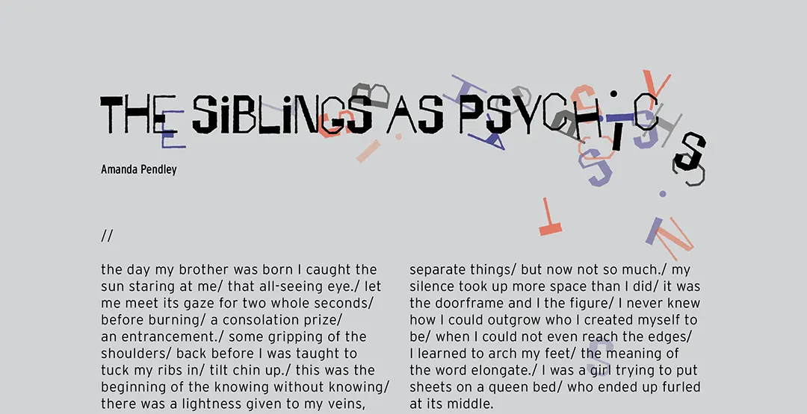
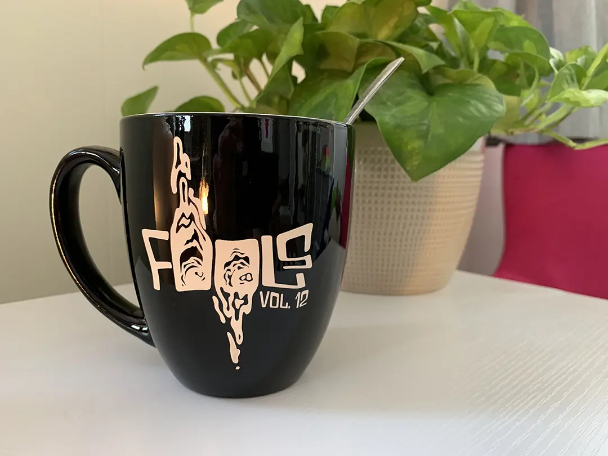
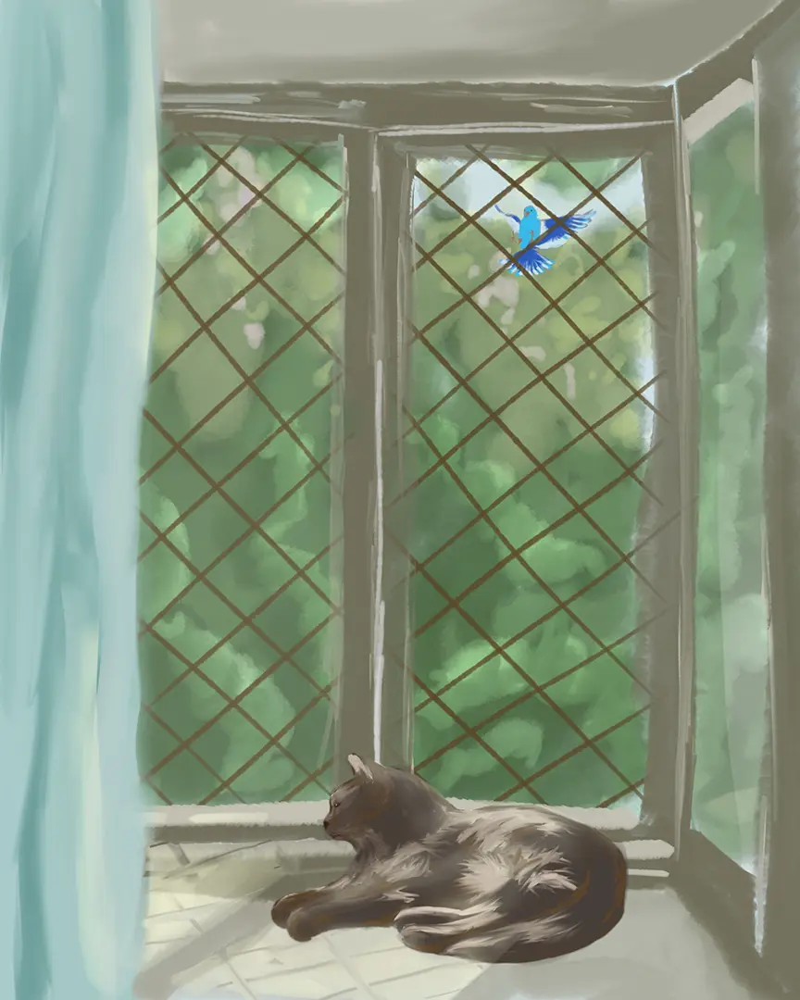
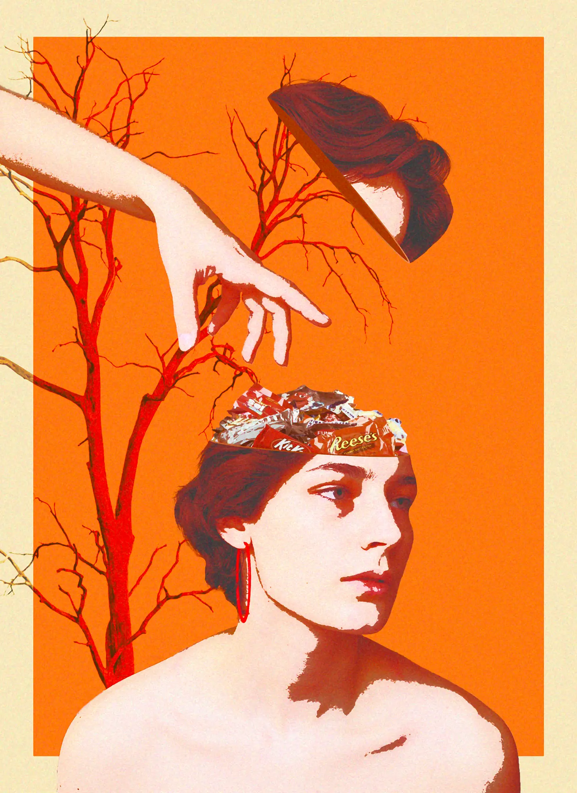
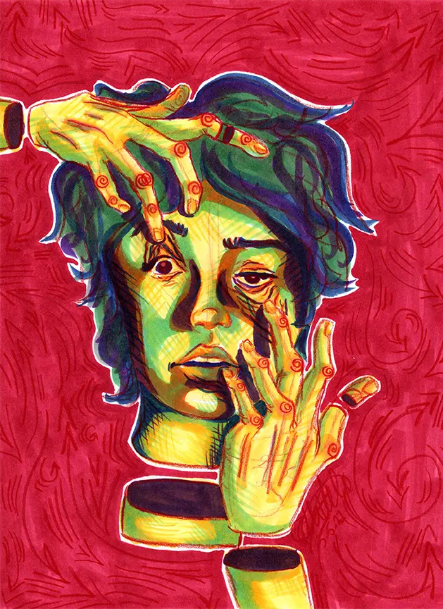

Fools Magazine
For just under a year I was a Design Assistant for Fools, a semiannual student print magazine at the University of Iowa. I did illustrations and layouts for volume 11 and volume 12, as well as merch design for the vol. 12 launch. My zine HOW WELL DO YOU KNOW THE CLITORIS? was also published in volume 12 and after leaving my role as Design Assistant, two self-portraits of mine were published in volume 13.
Vol. 11

![Mockup of a three-page magazine spread called 'The Siblings as Psychics.' Pages two and three have facing
illustrations of a brother and sister. The brother, on the left, is made of black scribbles with a red core where
his heart would be. The vague form of his figure is sitting against a wall. The sister is also sitting against a wall,
but she is made of grey scribbles barely visible on the background. There are red and blue scribbles like veins throughout
her body. She's reaching out for something.](../images/work/fools-vol12/5.webp)
Vol. 12



Vol. 13

